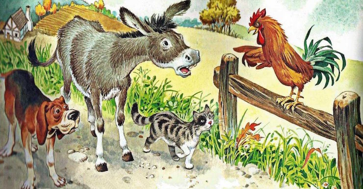

A fost odată un om tare sărman, care avea un măgar (din cauza abilităților reduse în desen toți personajii vor fi reprezentați prin pătrate)
ce de ani de zile îi tot căra la moară saci plini cu grăunţe. Dar, de la o vreme, bietului animal i se împuţinaseră puterile şi nu mai era bun de nicio ispravă. De aceea, stăpânul lui se hotărî să nu mai strice bunătate de nutreţ pe dânsul…
Măgarul pricepu de îndată că nu îl aşteaptă vremuri prea bune şi, fără să mai stea mult pe gânduri, îşi luă copitele la spinare şi plecă spre oraşul Bremen. Nu ştiu ce îi venise lui în gând că acolo s-ar putea face muzicantul oraşului. După ce merse el o bucată de vreme, iată că dădu peste un ogar(continuăm să utilizăm pătrate)
care zăcea întins la marginea drumului, răsuflând din greu.
– Ce gâfâi aşa? îl întrebă măgarul.
– Vai de mine, răspunse câinele. Pentru că sunt bătrân şi slăbesc pe zi ce trece, iar la vânătoare nu mă mai dovedesc bun de nicio ispravă, mi-am luat tălpăşiţa de acasă. Dar vorba e, cu ce am să-mi câştig eu pâine de acum înainte?
– Ştii ceva, îi zise măgarul, eu mă duc la Bremen să mă fac muzician. Hai cu mine, că s-o mai găsi şi pentru tine un loc în taraf! Eu am să cânt din lăută, iar tu ai să baţi la toba cea mare.
Câinelui îi plăcu propunerea, cum era să nu-i placă!
Şi plecară amândoi mai departe. Merseră ei aşa, până întâlniră în drum o pisică(iarăși pătrat).
O arătare jalnică, nu alta!…
– Ei, de ce eşti atât de tristă? o întrebă măgarul.
– Cui îi mai arde de veselie, când îi ajunge funia la par? zise mâţa. Pentru că anii bătrâneţii m-au cam ajuns de şale şi mi s-au tocit colţii, iar acum tot ce îmi place cel mai mult e să dorm pe cuptorul încins, stăpâna m-a alungat de acasă. Aşa că stau şi mă socot: încotro s-o apuc eu acum?
– Hai cu noi la Bremen, că la serenade nu te întrece nimeni. Cu siguranţă o să-ţi găseşti şi tu un loc în taraful oraşului!

Pisica socoti că sfatul acesta nu-i rău deloc şi se alătură trupei. Şi au tot mers fugarii, au tot mers, şi trecând ei prin faţa unei curţi, au văzut cocoţat pe o poartă un cocoş (ultimul pătrat)
care striga „cu-curigu” din toate puterile lui.
– Ce ţi s-a întâmplat de strigi aşa, mă cocoşule? îl întrebă măgarul.
– Iaca, dau şi eu de veste c-o să fie vreme frumoasă mâine, dar la ce bun!… spuse cu tristeţe cocoşul. Mâine e duminică şi ne vin oaspeţi. Dar vezi că stăpâna mea nu se mai arată milostivă faţă de mine; i-a spus bucătăresei c-ar pofti să mă mănânce la masă, în ciorbă, aşa că în seara asta o să mă scurteze de cap… Acum înţelegi de ce strig aşa?… Strig şi eu cât mai pot, cât mai sunt în viaţă!…
– Da’ de ce te necăjeşti tu pentru atâta lucru?…îl dojeni măgarul. Hai mai bine cu noi la Bremen. Ai un glas puternic şi, dacă te-ai învoi să cânţi cu noi, ne-ar asculta lumea cu gura căscată, nu alta!…
Cocoşul găsi propunerea urecheatului cât se poate de bună şi porniră tuspatru la drum.
<- Înapoi
Continuă ->